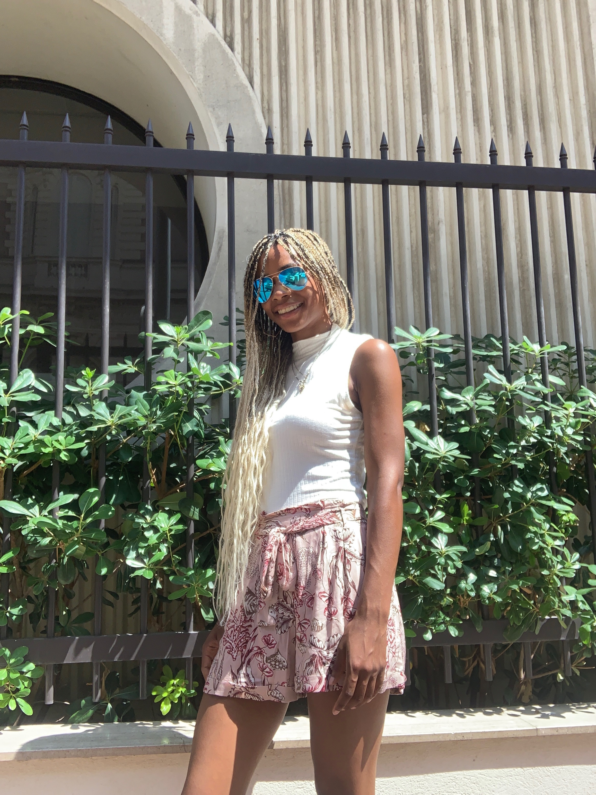

SALES PROFESSIONAL
| CELL | 123-456-7890 |
|---|---|
| JTM178@MIAMI.EDU | |
| https://www.linkedin.com/in/jordyntmoncur/ | |
| ADDRESS | 1234 Cat in the Hat Way Whoville, WV 01134 |
Hi! My name is Jordyn and this is my digital resume. I've created a this space as a way to showcase both my professional and creative career thus far. Born and raised in Harlem, NYC, I call many different states & cities my home. I lived in Harlem until I began to attend boarding school in East Hampton from 7-12th grade. Currently, I live in Long Beaach, California when I'm not in Miami for the school semester. During the summer, I visit my 3-year old half-sister Milyana in Nice, France. So, I like to think of myself as a "modern" nomad if you will.
Sales ProfessionalAug 2018- July 2019
Duties
Barista- In- TrainingJune 2018- August 2018
Duties
University of Miami 2017-2018 / 2019-2021
Major: Minor(s): French, Music Business & Entertainment
Ross School
2013-2017
Link to Senior Graduation Project: http://seniorproject.ross.org/2017/jmoncur17/
Here are some of the festivals I've been able to experience:
| Music Festivals Attended | Music Festivals I want to Attend |
|---|---|
| Ultra Music Festival Coachella 3x Electric ZOO Okeechobee Made in America |
Tomorrowland Any Festival in Ibiza InfraSounds Hard Summer |